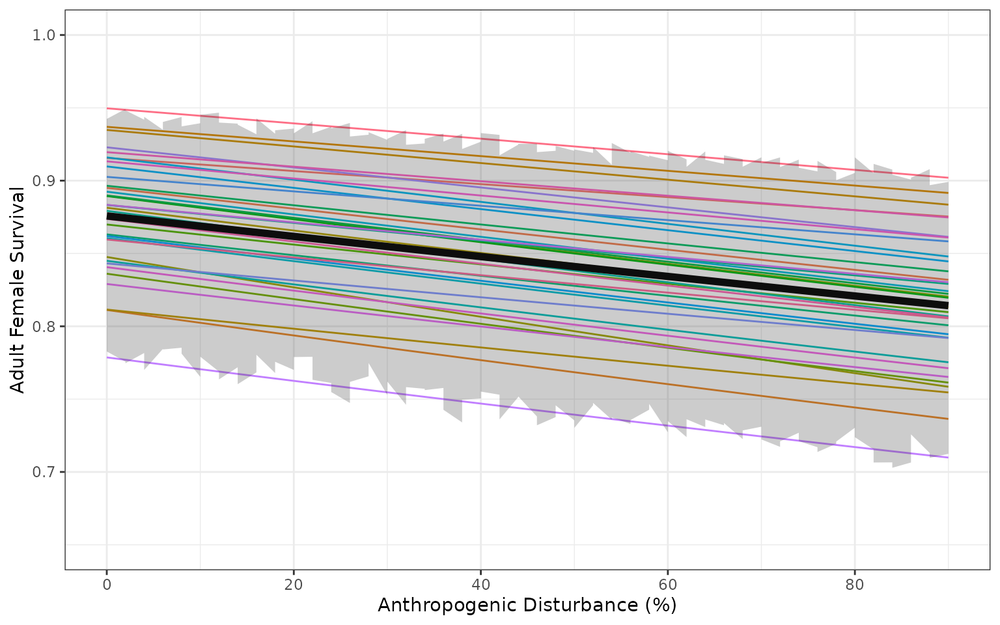
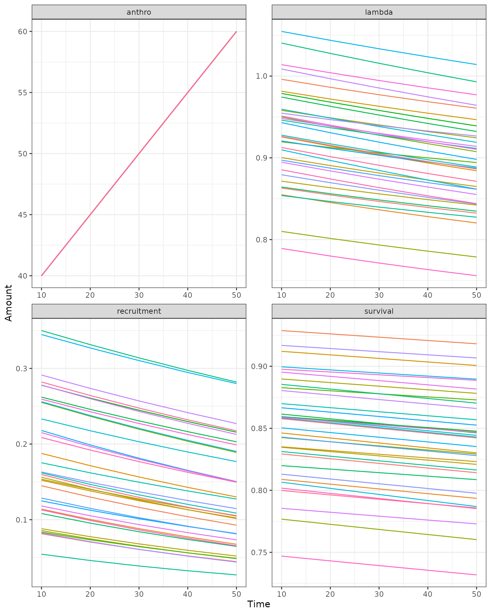

Introduction
caribouMetrics includes a population and demographic model that allows users to predict demographic rates for a given level of disturbance and project population growth over time. Demographic rates are predicted using model coefficients published in Johnson et. al. (2020). Population growth is projected using a two-stage demographic model with density dependence and interannual variability based on Johnson et. al. (2020) but with some modifications as described in Dyson et al. (2022).
demographicCoefficients() selects the regression
coefficient values and standard errors for the desired model version
(see popGrowthTableJohnsonECCC for options) and then
samples coefficients from these Gaussian distributions for each
replicate population.
Next demographicRates() is used to apply the sampled
coefficients to the disturbance covariates to calculate the expected
recruitment (\(\bar{R}_t\)) and
survival (\(\bar{S}_t\)) according to
the beta regression models estimated by Johnson et al. (2020): :\[\bar{R}_t \sim
Beta(\mu^R_t,\phi^R);log(\mu^R_t)=\dot{\beta^R_0}+\dot{\beta^R_a}A_t+\dot{\beta}^R_fF_t,\]
\[\bar{S}_t \sim (46\times Beta(\mu^S_t,\phi^S)-0.5)/45;log(\mu^S_t)=\dot{\beta^S_0}+\dot{\beta^S_a}A_t.\] \(\phi^R\) and \(\phi^S\) are the precisions of the Beta distributed errors. Each population is optionally assigned to quantiles of the Beta error distributions for survival and recruitment. Using quantiles means that the population will stay in these quantiles as disturbance changes over time, so there is persistent variation in recruitment and survival among example populations.
Finally, we can use the estimated demographic rates given the amount of disturbance to project the population growth rate under these conditions. This is accomplished with an implementation of the 2-stage population growth model used in Johnson et al. (2020) but with some differences described in Dyson et al. (2022). The number of post-juvenile females that survive from year \(t\) to the census \(\dot{W}_t\) is binomially distributed with survival probability \(\dot{S}_t\): \(\dot{W}_{t} \sim \text{Binomial}(\dot{N}_t,\dot{S}_t)\). Maximum potential recruitment rate is adjusted for sex ratio and (optionally) delayed age at first reproduction \[\dot{X}_t=\frac{\dot{R}_t/2}{1+\dot{R}_t/2}.\] Realized recruitment rate varies with population density, and the number of juveniles recruiting to the post-juvenile class at the census is a binomially distributed function of the number of surviving post-juvenile females and the adjusted recruitment rate: \[\dot{J}_{t} \sim \text{Binomial}(\dot{W}_t,\dot{X}_t[p_0-(p_0-p_k)(\frac{\dot{W}_t}{N_0k})^b]\frac{\dot{W}_t}{\dot{W}_t+a}).\] Given defalut parameters, recruitment rate is lowest \((0.5\dot{X}_t)\) when \(\dot{N}_t=1\), approaches a maximum of \(\dot{X}_t\) at intermediate population sizes, and declines to \(0.6\dot{X}_t\) as the population reaches carrying capacity of \(K=100\) times the initial population size. The post-juvenile female population in the next year includes both survivors and new recruits: \(\dot{N}_{t+1}=\text{min}(\dot{W}_t+\dot{J}_t,r_{max}\dot{N}_t)\).
Interannual variation in survival and recruitment is modelled using truncated beta distributions [rtrunc function; @novomestky_package_2016]: \(\dot{R}_t \sim \text{TruncatedBeta}(\bar{R}_t,\nu_R,l_R,h_R); \dot{S}_t \sim \text{TruncatedBeta}(\bar{S}_t,\nu_S,l_S,h_S)\). Coefficients of variation among years \((\nu_R,\nu_S)\) and maximum/minimum values \(l_R,h_R,l_S,h_S\) for recruitment and survival are set to default parameters in the function.
Simple demographic projection for a single example landscape
A simple case for demographic projection is multiple stochastic projections from a single landscape that does not change over time.
First we define a disturbance scenario with 40% anthropogenic
disturbance and 2% fire disturbance. If we had spatial data for the
disturbance in our area of interest we could use
disturbanceMetrics() to directly calculate the disturbance.
(See Disturbance
Metrics vignette for an example).
disturbance <- data.frame(Anthro = 40, fire_excl_anthro = 2)We begin by sampling coefficients for 500 replicate populations using default Johnson et al. (2020) models “M1” and “M4”. The returned object is a list containing the coefficients and standard errors from the national model as well as the sampled coefficients and the quantiles that they have been assigned to.
popGrowthPars <- demographicCoefficients(500)
head(popGrowthPars$coefSamples_Survival$coefSamples)
#> Intercept Anthro Precision
#> [1,] -0.1520295 -0.0008241656 79.41793
#> [2,] -0.1467973 -0.0007818032 55.30423
#> [3,] -0.1398327 -0.0006629473 80.70902
#> [4,] -0.1336733 -0.0006685072 63.58602
#> [5,] -0.1387310 -0.0005633004 68.27663
#> [6,] -0.1387960 -0.0008918640 77.06096
head(popGrowthPars$coefSamples_Survival$coefValues)
#> Intercept Anthro Precision
#> 1: -0.142 -8e-04 63.43724
head(popGrowthPars$coefSamples_Survival$coefStdErrs)
#> Intercept Anthro Precision
#> 1: 0.007908163 0.000127551 8.272731
head(popGrowthPars$coefSamples_Survival$quantiles)
#> [1] 0.8226954 0.1201904 0.6494489 0.8969439 0.6285070 0.1125752Next we calculate sample demographic rates given sampled model
coefficients and disturbance metrics for our example landscape, setting
returnSample = TRUE so that the results returned contain a
row for each sample in each scenario. We set the initial population size
for each sample population to 100, and project population dynamics for
20 years using the caribouPopGrowth function with default
parameter values. Anthropogenic disturbance is high on this example
landscape, so the projected population growth rate for most sample
populations is below 1, but uncertainty in the model means that a few
sample populations persist.
rateSamples <- demographicRates(
covTable = disturbance,
popGrowthPars = popGrowthPars,
ignorePrecision = FALSE,
returnSample = TRUE,
useQuantiles = FALSE)
rateSamples$N0 <- 100
demography <- cbind(rateSamples,
caribouPopGrowth(N = rateSamples$N0,
numSteps = 20,
R_bar = rateSamples$R_bar,
S_bar = rateSamples$S_bar))
fds <- pivot_longer(demography, !(scnID:replicate) & !N0, names_to = "Metric",
values_to = "Amount")
d1 <- ggplot(fds, aes(x = as.factor(round(Anthro, 2)), y = Amount,
colour = fire_excl_anthro)) +
geom_violin(alpha = 0.4, color = "black") +
geom_point(shape = 21, size = 2, position = position_jitterdodge()) +
facet_wrap(~Metric, scales = "free") +
theme(legend.position = "none") +
xlab("Anthro")
plot(d1)
Effects of disturbance on demographic rates
We can project demographic rates over a range of landscape conditions to recreate figures 3 and 5 from Johnson et al. (2020) and see the effects of changing disturbance on model behaviour. First we create a table of disturbance scenarios across a range of different levels of fire and anthropogenic disturbance.
covTableSim <- expand.grid(Anthro = seq(0, 90, by = 2),
fire_excl_anthro = seq(0, 70, by = 10))
covTableSim$Total_dist = covTableSim$Anthro + covTableSim$fire_excl_anthroWe again sample coefficients from default models M1 and M4. The sample of 500 is used to calculate averages, while the sample of 35 is used to show variability among populations.
popGrowthPars <- demographicCoefficients(
500,
modelVersion = "Johnson",
survivalModelNumber = "M1",
recruitmentModelNumber = "M4",
populationGrowthTable = popGrowthTableJohnsonECCC
)
popGrowthParsSmall <- demographicCoefficients(
35,
modelVersion = "Johnson",
survivalModelNumber = "M1",
recruitmentModelNumber = "M4",
populationGrowthTable = popGrowthTableJohnsonECCC
)Next we calculate demographic rates given sampled model coefficients.
For the smaller sample we set returnSample = TRUE so that
the results returned contain a row for each sample in each scenario.
Setting useQuantiles = TRUE assigns each sample population
to a quantile of the regression model error distributions for survival
and recruitment, which allows us to see how demographic rates change.
For the larger sample we set returnSample = FALSE and the
result has one row for each scenario and includes summary statistics of
the uncertainty across the samples. We do this twice, once with
ignorePrecision = TRUE and once with
ignorePrecision = FALSE to demonstrate the effect of
considering the variance among populations around the National mean in
addition to the uncertainty about the coefficient estimates.
rateSamples <- demographicRates(
covTable = covTableSim,
popGrowthPars = popGrowthParsSmall,
ignorePrecision = FALSE,
returnSample = TRUE,
useQuantiles = TRUE
)
rateSummaries <- demographicRates(
covTable = covTableSim,
popGrowthPars = popGrowthPars,
ignorePrecision = FALSE,
returnSample = FALSE,
useQuantiles = FALSE
)
rateSummariesIgnorePrecision <- demographicRates(
covTable = covTableSim,
popGrowthPars = popGrowthPars,
ignorePrecision = TRUE,
returnSample = FALSE,
useQuantiles = FALSE
)No precision
The Johnson et al. (2020) model with parameter uncertainty but no
precision. The bands are the 2.5% and 97.5% quantiles of 500 sample
parameter values.


With precision
The Johnson et al. (2020) model with parameter uncertainty and precision. Faint coloured lines show example trajectories of expected demographic rates in sample populations, assuming each sample population is randomly distributed among quantiles of the beta distribution, and each population remains in the same quantile of the beta distribution as disturbance changes.
#> Warning: Using `size` aesthetic for lines was deprecated in ggplot2 3.4.0.
#> ℹ Please use `linewidth` instead.
#> This warning is displayed once every 8 hours.
#> Call `lifecycle::last_lifecycle_warnings()` to see where this warning was
#> generated.
Projection of population growth over time on a changing landscape
In this example, we project 35 sample populations for 50 years on a
landscape where the anthropogenic disturbance footprint is increasing by
5% per decade. We set interannualVar = FALSE,
K = FALSE, and probOption = "continuous" to
use a simpler 2-stage demographic model without interannual variability,
density dependence, or discrete numbers of animals, as in Stewart et
al. in prep.
numTimesteps <- 5
stepLength <- 10
N0 <- 100
AnthroChange <- 5 #For illustration assume 5% increase in anthropogenic disturbance footprint each decade
# at each time, sample demographic rates and project, save results
pars <- data.frame(N0 = N0)
for (t in 1:numTimesteps) {
covariates <- disturbance
covariates$Anthro <- covariates$Anthro + AnthroChange * (t - 1)
rateSamples <- demographicRates(
covTable = covariates,
popGrowthPars = popGrowthParsSmall,
ignorePrecision = FALSE,
returnSample = TRUE,
useQuantiles = TRUE
)
if (is.element("N", names(pars))) {
pars <- subset(pars, select = c(replicate, N))
names(pars)[names(pars) == "N"] <- "N0"
}
pars <- merge(pars, rateSamples)
pars <- cbind(pars,
caribouPopGrowth(pars$N0,
R_bar = pars$R_bar, S_bar = pars$S_bar,
numSteps = stepLength, interannualVar = FALSE,
K = FALSE, probOption = "continuous"))
# add results to output set
fds <- subset(pars, select = c(replicate, Anthro, S_bar, R_bar, N, lambda))
fds$replicate <- as.numeric(gsub("V", "", fds$replicate))
names(fds) <- c("Replicate", "anthro", "survival", "recruitment", "N", "lambda")
fds <- pivot_longer(fds, !Replicate, names_to = "MetricTypeID", values_to = "Amount")
fds$Timestep <- t * stepLength
if (t == 1) {
popMetrics <- fds
} else {
popMetrics <- rbind(popMetrics, fds)
}
}
popMetrics$MetricTypeID <- as.character(popMetrics$MetricTypeID)
popMetrics$Replicate <- paste0("x", popMetrics$Replicate)
popMetrics <- subset(popMetrics, !MetricTypeID == "N")
References
Dyson, M., Endicott, S., Simpkins, C., Turner, J. W., Avery-Gomm, S., Johnson, C. A., Leblond, M., Neilson, E. W., Rempel, R., Wiebe, P. A., Baltzer, J. L., Stewart, F. E. C., & Hughes, J. (in press). Existing caribou habitat and demographic models need improvement for Ring of Fire impact assessment: A roadmap for improving the usefulness, transparency, and availability of models for conservation. https://doi.org/10.1101/2022.06.01.494350
Johnson, C.A., Sutherland, G.D., Neave, E., Leblond, M., Kirby, P., Superbie, C. and McLoughlin, P.D., 2020. Science to inform policy: linking population dynamics to habitat for a threatened species in Canada. Journal of Applied Ecology, 57(7), pp.1314-1327. https://doi.org/10.1111/1365-2664.13637
Stewart, F.E., Micheletti, T., Cumming, S.G., Barros, C., Chubaty, A.M., Dookie, A.L., Duclos, I., Eddy, I., Haché, S., Hodson, J. and Hughes, J., 2023. Climate‐informed forecasts reveal dramatic local habitat shifts and population uncertainty for northern boreal caribou. Ecological Applications, 33(3), p.e2816.